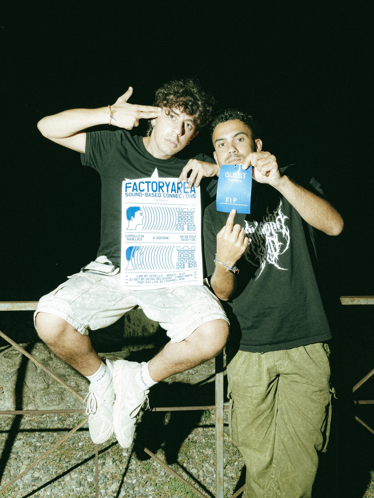
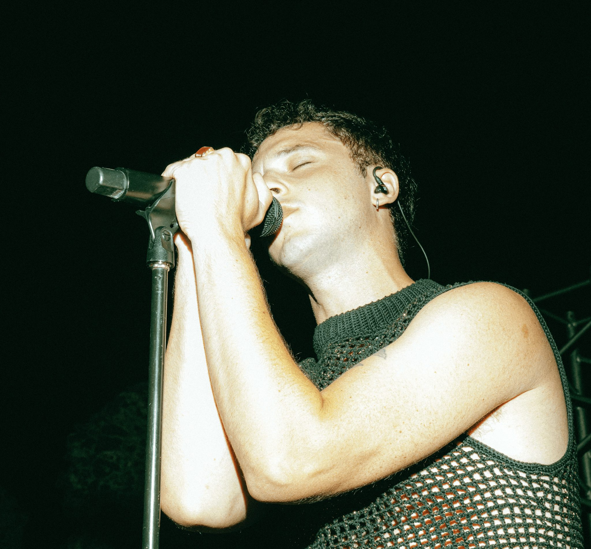
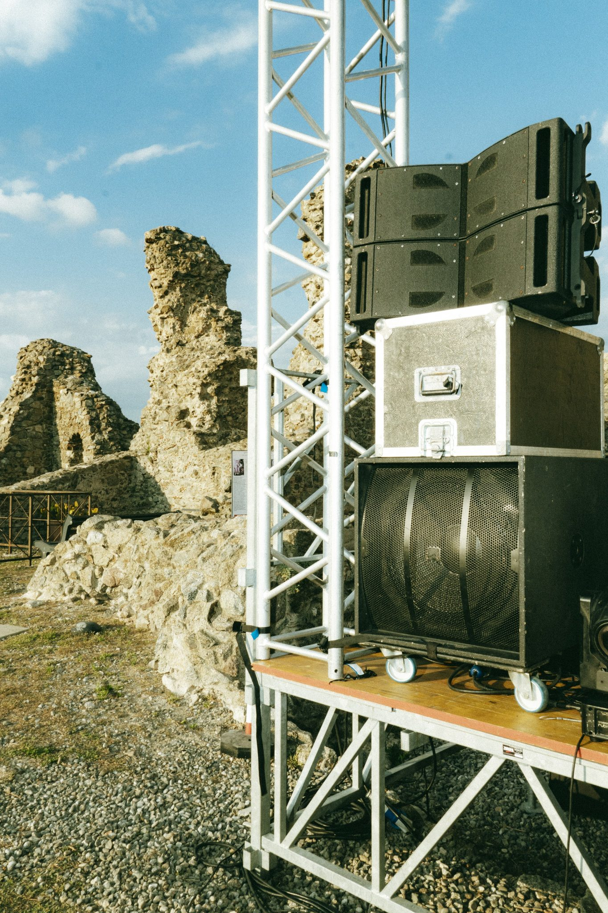

Factory Area Festival 4
- Venue
- Castello Normanno di Squillace
- Data
- 6 agosto 2024
- Lineup
- Gemello, Bruno Belissimo, Ibisco, RIP.
L'evento ha segnato la conclusione di un primo ciclo per il progetto Factory Area Festival. All'interno della meravigliosa cornice del castello normanno di Squillace si sono esibiti artisti di portata nazionale come Gemello ed emergenti in rampa di lancio come il duo RIP.


La comunicazione è stata curata da Tuttovento studio che ha reinterpretato in chiave essenziale il concetto di espansione del suono attraverso il claim "Sound Based Connection".

L'evento ha registrato il sold-out, certificando come il lavoro della produzione nei mesi precedenti abbia attivato un genuino interesse nei confronti della comunità locale.
